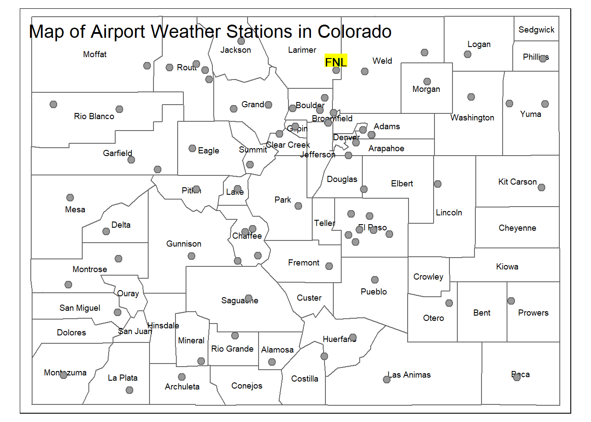
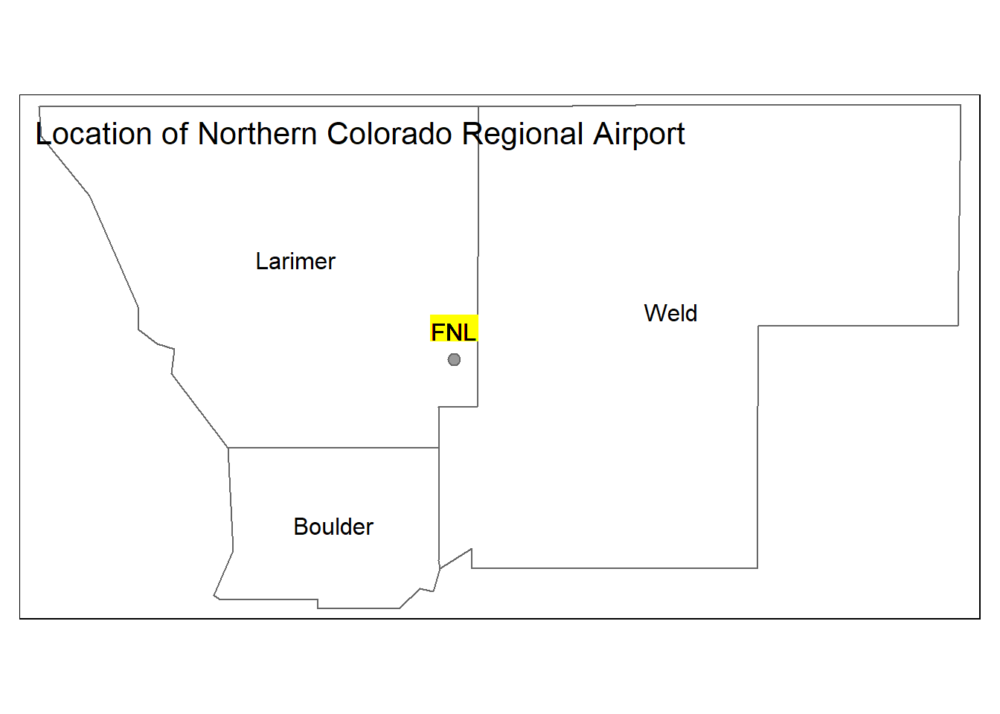
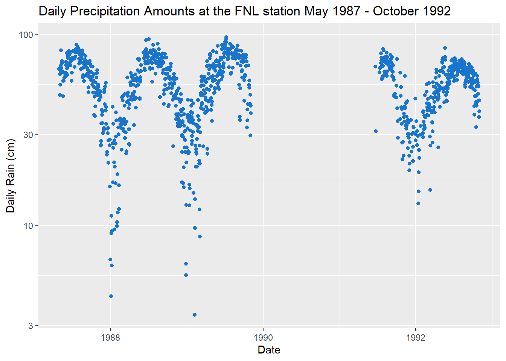

# Grab output files from 00
working_files <- list.files(path = "data/in/", full.names = T)
# Create path from values
for (i in working_files) {
temp_dir = file.path(getwd(), i)
load(temp_dir)
}mapview(co_stations)# Map the Colorado ASOS Stations
tm_shape(co_manip) +
tm_polygons(col = 'white') +
tm_text("name", size = 0.6) +
tm_shape(co_stations) +
tm_bubbles(size = 0.2) +
tm_shape(fnl) +
tm_text("station", bg.color = "yellow", ymod = 0.5, size = 0.8) +
tm_layout(title = "Map of Airport Weather Stations in Colorado")
# Mapping the FNL site
tm_shape(fnl_counties) +
tm_polygons(col = "white") +
tm_text("name") +
tm_shape(fnl) +
tm_bubbles(size = 0.2) +
tm_text("station", bg.color = "yellow", ymod = 1) +
tm_layout(title = "Location of Northern Colorado Regional Airport")
# Get daily precipitation amounts for our station
daily <- fnl %>%
mutate(date = as.Date(valid)) %>%
group_by(date) %>%
summarize(daily_rain = mean(tmpf,na.rm=T))
# Plot the precipitation timeseries
ggplot(daily, aes(x=date, y = daily_rain)) +
geom_point(color = "dodgerblue3") +
scale_y_log10() +
labs(title = "Daily Precipitation Amounts at the FNL station May 1987 - October 1992", y = "Daily Rain (cm)",
x = "Date")